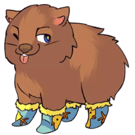

Wombat SocksPrivacy Policy
Last updated: 1 July 2026
Wombat Socks is a browser extension that helps you turn recipe links into a Queen Victoria Market (qvm.com.au) shopping cart. This policy explains what the extension does with your data. In short: it runs entirely in your browser, and we do not collect, store, transmit, or sell any of your data.
We have no servers and collect nothing
There is no Wombat Socks backend. The extension has no account system, no analytics, and no tracking. Nothing you enter or do is sent to us or to any third party under our control. We never see your recipes, your shopping, your QVM account, or your identity.
What the extension accesses, and why
- Recipe links you paste — fetched directly from the recipe website so the extension can read the ingredient list from that page. These requests are made without cookies.
- Queen Victoria Market (qvm.com.au) — the extension searches the QVM shop for matching products (prices and vendors) and, when you choose to, adds the items you approve to your QVM cart.
- Your QVM cart / session — adding to cart runs inside a qvm.com.au tab using your existing QVM session, exactly as if you added the item yourself. The extension does not read, store, or transmit your QVM login, password, or personal details. It works with or without a QVM account.
All of this happens locally in your browser and only while you are using the extension. Ingredient and product data lives in memory during a session and is discarded when you close the popup — it is not persisted.
Permissions
- Host access — to fetch the recipe pages you provide and to reach the QVM shop.
- Scripting & tabs — to add your approved items to your open QVM cart tab.
These permissions are used solely for the features described above.
Third parties
When you use the extension, your browser communicates directly with the recipe websites you paste and with qvm.com.au. Those sites have their own privacy policies. We do not add any tracking or advertising, and we share nothing with anyone.
Changes
If this policy changes, the updated version will be posted on this page with a new date above.
Contact
Questions? Open an issue on the project repository.